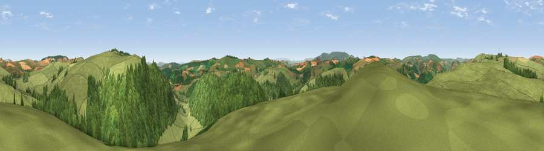

Viewpoint near Stowe
#11894 in England · top 34% of its area beats it · near Stowe · path 276 mWhere it is
The exact computed spot (SO 28425 73925). Click the marker for map links.
Public access: the nearest public right of way is about 276 m away — the final stretch may cross private land. Computed from Natural England's CRoW access layer and OpenStreetMap rights of way — not the legal definitive map. Always verify locally.
The view, rendered

A 360° render of this exact spot computed from the terrain model, tree cover and land cover — summer colours, afternoon light, calibrated against photographs of famous viewpoints. Real trees, hedges and buildings will differ in detail.
The panorama
Grey silhouette: terrain skyline in each direction (720 bearings, Earth curvature and refraction included). Dashed green: skyline with trees (+15 m) and buildings (+8 m) as obstacles. Blue strip: how far the ground is visible on each bearing.
Where the view opens
Wedge length = distance to the farthest visible ground on that bearing (vegetation-aware). Rings at 10, 25 and 50 km.
What fills the view
54% grassland · 44% woodland · 2% cropland
Angular shares of the visible panorama (visual magnitude), not map area. Landscape diversity 0.34 (0–1 Shannon).
Key numbers
More beautiful places nearby
The staircase of upgrades: each row has a higher view potential than everything closer. Driving times are estimates from straight-line distance, calibrated against real road routing — check an actual route before setting out.
| Place | Direction | Drive | Score |
|---|---|---|---|
| Cwm-Sanaham Hill | NW · 2 km | ~5 min | 70.1 |
| Stow Hill | E · 3 km | ~8 min | 71.7 |
| Viewpoint near Stowe | ENE · 4 km | ~9 min | 74.4 |
| Viewpoint near Stapleton | SE · 6 km | ~13 min | 77.6 |
| Viewpoint near Hopton Castle | ENE · 8 km | ~16 min | 79.3 |
| Rushock Hill | S · 14 km | ~26 min | 80.2 |
| Viewpoint near Leinthall Starkes | ESE · 16 km | ~29 min | 80.3 |
| Gatley Hill | ESE · 17 km | ~30 min | 82.6 |
52.35869, -3.05243 · source: screening · position refined by local search. Computed location — check access rights before visiting.